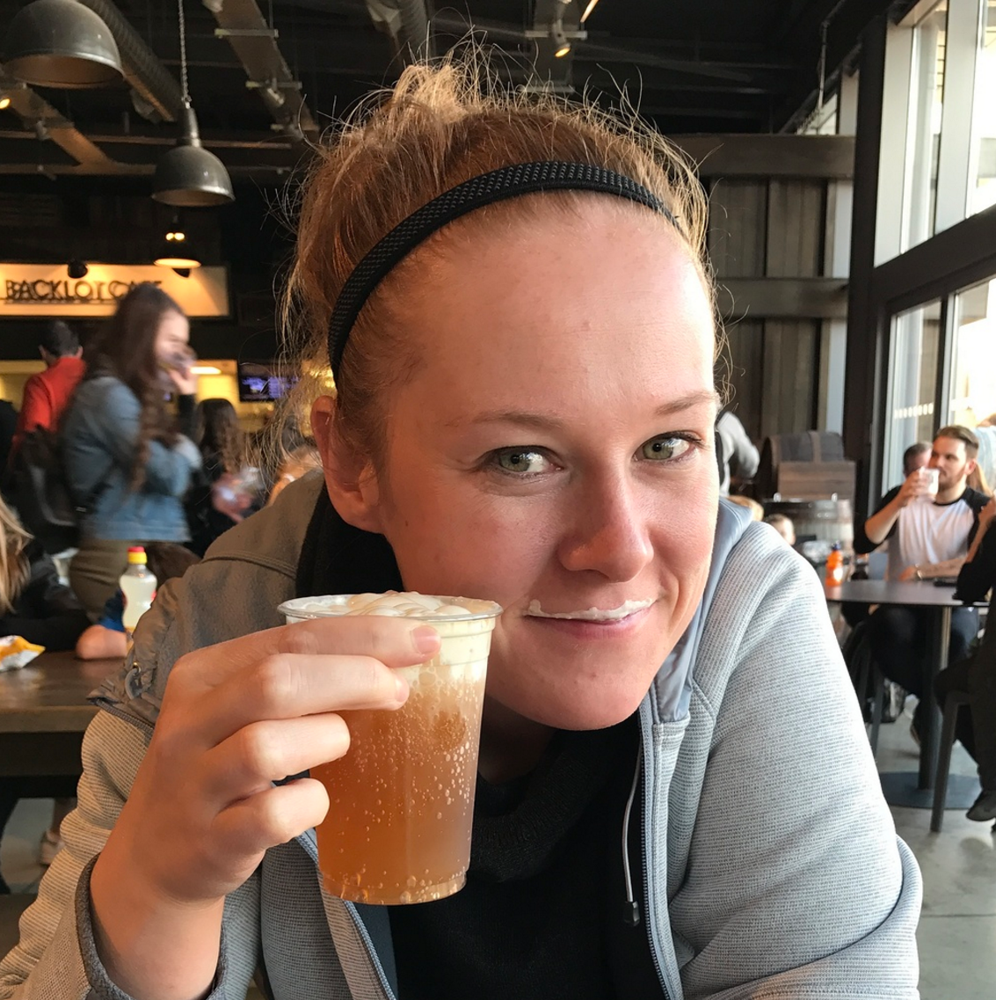

About Me

To put it concisely, I am a sporty, nerd who loves animals. I currently work at the University of Minnesota as a Veterinary Technician. In my free time I am typically either caring for some sort of animal or playing sports. My wife and I own 2 dogs, Mr. Waffles and Douglas Fur and 2 chickens named Chandler and Pheobe. We also foster dogs on a regular basis through Underdog Rescue. The main sports I play are Softball and Racquetball.
Connect with Me